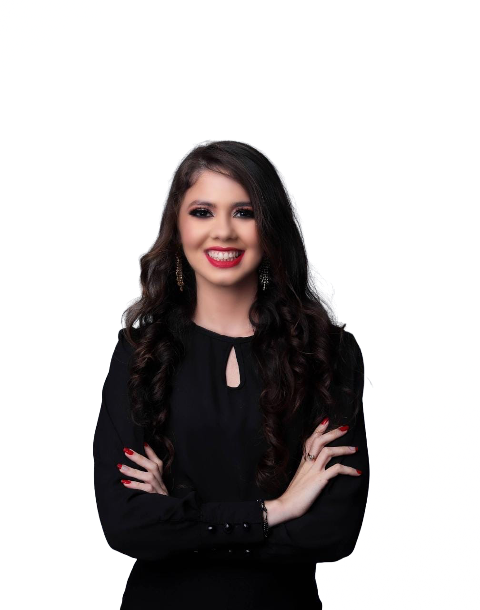
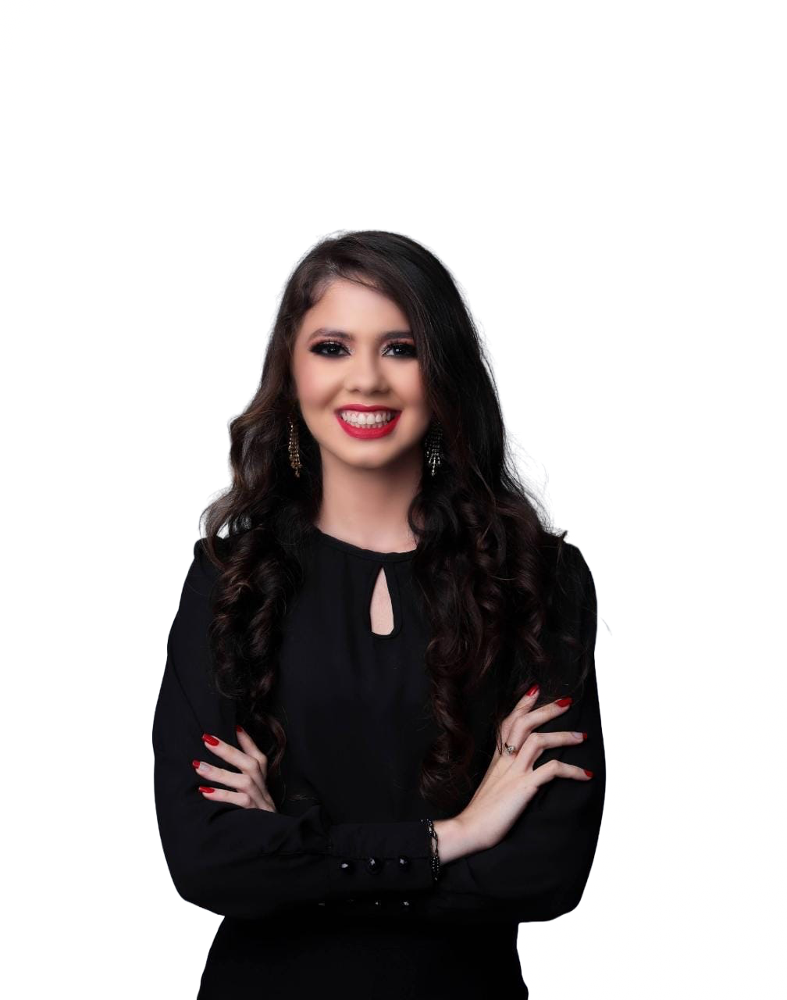

Olá
Eu sou
Bacharel em Direito pela Faculdade de Ciências Sociais Aplicadas - UNIFACISA. Atualmente exerce a função de assessora jurídica na PGM - Procuradoria Geral do Município de Campina Grande. Secretária da Comissão de Investigação de recebimento do Auxílio Emergencial, instaurada pelo Ministério Público Federal (MPF). Membro da Comissão de Direito Imobiliário e Urbanístico da Ordem de Advogados do Brasil - Paraíba. Foi estagiária no Tribunal de Justiça da Paraíba no período de fevereiro de 2020 até dezembro do mesmo ano. Foi estagiária no escritório Rocha, Marinho e Sales de julho de 2018 à abril de 2019. Tem experiência na área de Direito, com ênfase em Administrativo Municipal e Direito Urbanístico. Prática em emissão de parecer. Atuação na área de Violência Doméstica.
 
